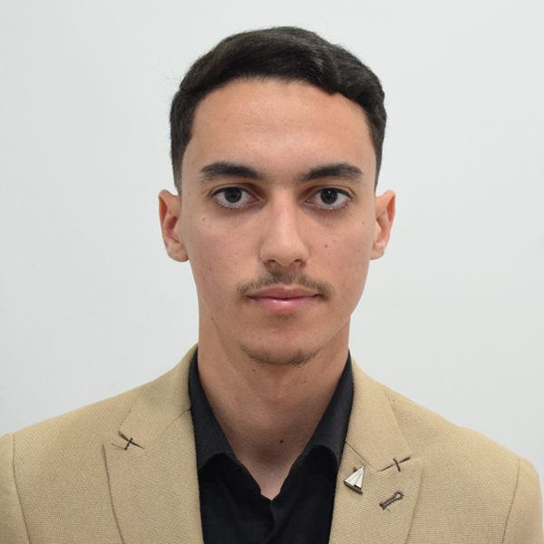

Étudiant en Master Ingénierie et Innovation en Réseaux
A la recherche d'un stage de fin d'études de 6 mois (à partir de mars 2027)
rabehi.abdelhak.st45@gmail.com | LinkedIn | Drancy, Île-de-France
| Étudiant en Master 2 Ingénierie Réseaux à Sorbonne Paris Nord, je recherche un stage de fin d'études de 6 mois à partir de mars 2027. Fort d'une double compétence technique, je combine la maîtrise des infrastructures réseaux traditionnelles (switching & routing, sécurité) et des environnements modernes (Cloud AWS). Adaptable et curieux, je suis prêt relever des défis techniques variés, de l'architecture sur site aux environnements hybrides. |
| 2025 - 2027 | Master 2 Ingénierie et Innovation en Réseaux - Université Sorbonne Paris Nord |
| 2024 - 2025 | Licence 3 Sciences pour l'Ingénieur (Parcours Électronique, Signal et Réseaux) - Université Sorbonne Paris Nord |
| 2021 - 2024 | Licence Télécommunications - Université M'Hamed Bougara - Algérie |
| Mars - Juil. 2024 | Stagiaire Administrateur Réseau - Algérie Télécom |
| Juin - Août 2026 | Projet Cloud AWS - Infrastructure as Code et automatisation réseau Cloud AWS |
| Réseaux & Protocoles | ICMP, IPv4/IPv6, VLAN, STP, EtherChannel, MPLS, QoS, OSPF, RIP, DHCP, NAT, DNS, SSH, WiFi/802.11 |
| Cloud & Virtualisation | AWS (VPC, EC2, IAM, S3, EBS), VMWare, SDN/NFV |
| Systèmes & Sécurité | Linux, Firewall, Proxy, VPN (IPSec/TLS) |
| Langues | Français (Courant), Anglais technique (Intermédiaire) |